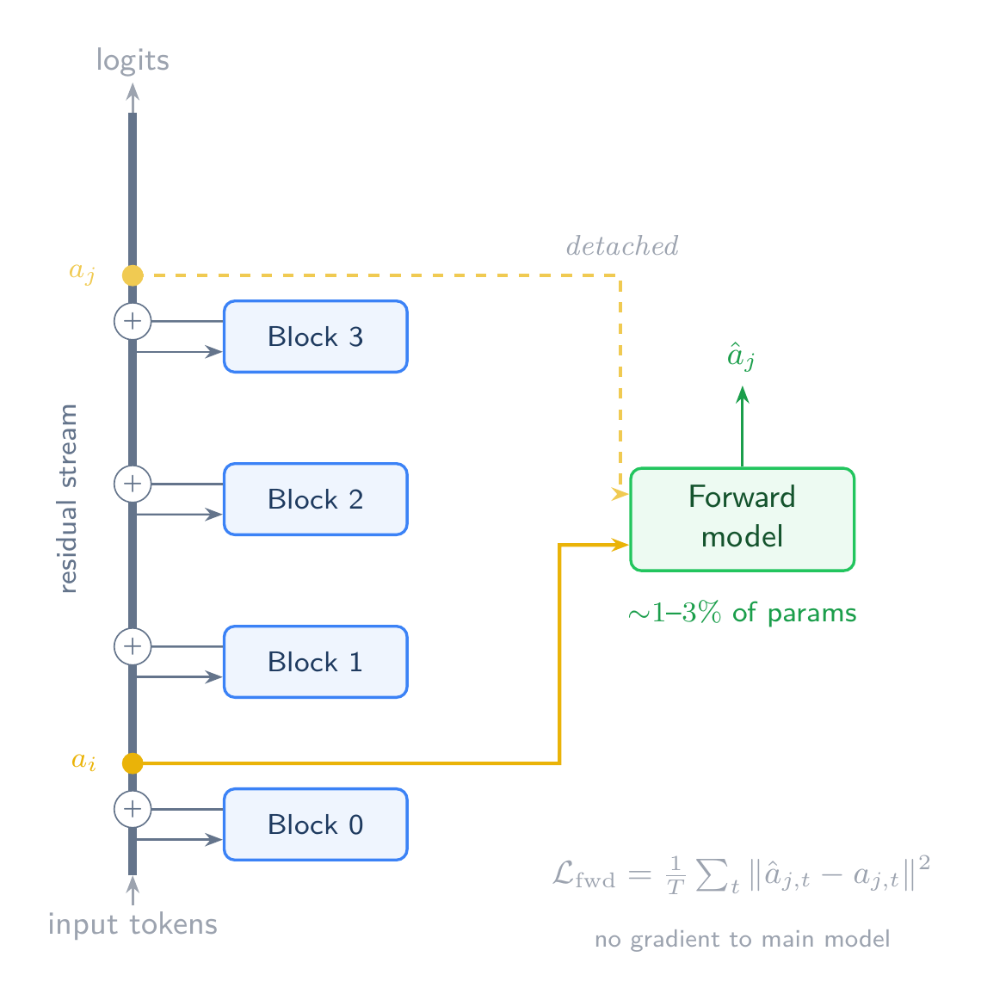
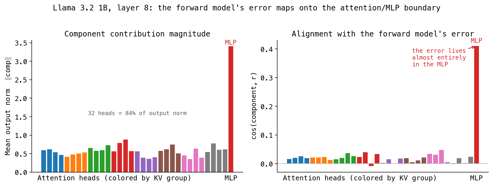

We introduce forward self-models: small networks trained to predict a neural network's later-layer activations from its earlier-layer activations, learning an empirical approximation of the computational function that the intervening layers implement. We demonstrate this by training forward self-models with sizes of 1-3% of main model parameters on main models ranging from 30M to 1B parameters, achieving up to 97% cosine similarity with the target activations and up to 94% recovery of the KL divergence of a layer's contribution to the output distribution. Forward self-model prediction errors are interpretably structured and track the computational complexity gap between the main model and forward model. We argue that forward self-models provide a primitive for both mechanistic interpretability and future model architectures that require an explicit model of their own computational dynamics. Code is available at https://github.com/jagilley/forward-self-models.
A transformer's layers transform representations sequentially through the residual stream. Each layer applies attention and feedforward computation, producing output activations that become the next layer's input. The computational function each layer implements is central to understanding how the model works, but it is difficult to characterize directly. Existing approaches study this function indirectly: probing identifies what information is linearly accessible at each layer, and ablation measures each layer's causal contribution to the output. These approaches characterize what information exists and where it matters, but say less about the transformation itself.
We introduce a technique that directly approximates layers' computational function. A forward self-model is a small auxiliary network trained to predict a main model's later-layer activations from its earlier-layer activations. It learns through observation alone how the intervening layers transform their inputs. Because the forward model is deliberately small (1-3% of the main model's parameters), its approximation is imperfect, and what it captures is specifically the compressible component of the layer's computation. What it misses, the prediction residual, reveals the 'computational novelty' reflecting which aspects of the computation are genuinely hard to compress.
We train forward self-models on language modeling tasks at various model sizes. On our own 30M parameter GPT, a forward model predicting a single transformer layer achieves 0.97 cosine similarity with the target layer's activations. Attention pattern similarity is near-perfect (>0.98 cosine for 3 of 4 heads) while weight similarity is zero due to the gauge symmetry of the attention mechanism under rotations of the projection matrices. Its prediction errors track computational complexity (distributed attention, long-range context matching) rather than prediction difficulty. In causal substitution, replacing the layer with the forward model's prediction recovers 94% of the layer's KL contribution, with uniform degradation across several behavioral categories.
At Llama 3.2 1B scale, a 26.2M-parameter forward model (2.1% of Llama) achieves 0.94 cosine similarity with a layer's computation. Per-head decomposition reveals that the prediction error concentrates in the MLP rather than the attention heads, recovering a meaningful decomposition of which computations in a 1.24B-parameter model are predictable from the preceding layer state and which are not.
Our main contributions are:
The forward model is a small transformer that takes the main model's residual-stream activations at layer \(i\) and predicts the activations at layer \(j > i\). It processes the same sequence of positions as the main model but through its own, much smaller, set of weights. It uses causal attention (seeing only positions \(\leq t\) when predicting position \(t\)) so that its computation is compatible with the main model's autoregressive structure.
The forward model's loss is MSE between its predicted activations \(\hat{a}_j\) and the main model's actual activations \(a_j\):
\[\mathcal{L}_{\text{fwd}} = \frac{1}{T} \sum_{t=1}^{T} \| \hat{a}_{j,t} - a_{j,t} \|^2\]
No gradient flows from this loss into the main model. The target activations \(a_j\) are detached. The forward model is a passive observer of the main model's computation, learning from its own prediction errors.
The key architectural choice is that the forward model must be significantly smaller than the main model. Our default configuration uses 1-3% of the main model's parameters, with a single attention head operating in a compressed 64-dimensional subspace. This capacity constraint ensures that the prediction residual \(r = a_j - \hat{a}_j\) captures genuine computational novelty rather than training noise.

The two models train independently on their respective losses: the main model on the task loss, the forward model on MSE.
For all experiments unless otherwise noted:
Language (ours). 4-layer, 4-head, 256-dim GPT-2 (28.9M params), trained on FineWeb-Edu (10M tokens, no temperature filtering). AdamW with lr=3e-4 and weight decay 0.01.
Language (Llama). Llama 3.2 1B (1.24B params, 16 layers, d=2048, 32 attention heads with GQA in 8 KV groups). Frozen; activations cached from 100M tokens.
Language (ours). For a 1-layer prediction gap (post_block0 → post_block1): 1-layer transformer, 1 attention head, 64-dim key/query/value, MLP hidden 512 (330K params, ~1% of main model). For a 3-layer gap (post_block0 → post_block3): 2-layer transformer, same head configuration (660K params, ~2.3%). Pre-norm (LayerNorm before attention and MLP), residual connections, causal attention. AdamW with lr=1e-3 and weight decay 0.01.
Language (Llama). For predicting layer \(7 \to 8\) of Llama 3.2 1B (d=2048): 1-layer transformer, 1 attention head, 128-dim key/query/value, SwiGLU MLP hidden 4096 (26.2M params, ~2.1% of main model). AdamW with lr=1e-4 and weight decay 0.01.
We begin with the 330K-parameter transformer forward model predicting post_block0 → post_block1 (one layer of the 28.9M-parameter GPT). It achieves 0.972 cosine similarity with only 0.003 MSE. For comparison, a per-position MLP of similar size (263K params) predicting from post_embed achieves only 0.788 cosine. The MLP is structurally blind to cross-position attention effects, so its residual tells you only that attention exists, which is trivially predictable. The transformer forward model's residual captures genuinely novel information: computation that exceeded the forward model's representational capacity.
We can directly measure how much of block1's computation the forward model captures by replacing block1 entirely with the forward model's prediction and continuing the forward pass from block2 onward:
| Mode | Accuracy | KL vs Normal |
|---|---|---|
| Normal (block1 intact) | 0.222 | — |
| Substituted (forward model) | 0.217 | 0.062 |
| Ablated (skip block1 entirely) | 0.146 | 1.094 |
The forward model recovers ~94% of block1's KL contribution. Ablating block1 entirely destroys 7.6 percentage points of accuracy; substituting costs only 0.5 percentage points. Degradation is uniform across behavioral categories: punctuation, induction, high-confidence predictions, function words, and content words all show KL between 0.04-0.07. No behavior-specific catastrophic failure.
We froze the main model and trained forward models at five capacity points on the same frozen activations (all predicting post_block0 → post_block3, a 3-layer gap):
| % of model | Params | % of predicted layers | Cosine | d(sentence start) | d(before closer) | Effective rank |
|---|---|---|---|---|---|---|
| 1% | 330K | 5% | 0.890 | -0.58 | +0.78 | 247 |
| 3% | 791K | 11% | 0.930 | -0.64 | +0.92 | 250 |
| 10% | 3.2M | 44% | 0.999 | -0.37 | +0.30 | 235 |
| 22% | 6.3M | 88% | 0.999 | -0.45 | +0.66 | 244 |
The forward model saturates at approximately the parameter count of the layers it predicts. Both the 3.2M and 6.3M models reach cosine 0.999 with identical residual norms. The saturation point (3.2M params, ~44% of the predicted layers' 7.2M total) roughly matches the parameter count of a single transformer block (~2.4M each), even though the forward model is predicting three blocks simultaneously. Once the forward model's capacity reaches this scale, adding more parameters doesn't help. The behavioral effect sizes shrink as capacity increases: delimiter tracking drops from d=+0.78 at 1% to d=+0.30 at 10%, as the architectural bottleneck loosens.
All experiments above predict a single transformer layer. The same approach extends to multi-layer prediction, where the forward model approximates the joint computation of several blocks at once.
We tested this on a frozen 77M-parameter GPT (8 layers, 8 heads, 512-dim) trained on 100M tokens of FineWeb-Edu. A 1.18M-parameter forward model (1-layer transformer, single 64-dim attention head, 1.5% of the main model) predicted from post_block0 across gaps of 1, 2, and 3 layers.
| Layers predicted | Cosine | KL (sub) | KL (abl) | Recovery |
|---|---|---|---|---|
| 1 | 0.995 | 0.024 | 0.258 | 91% |
| 2 | 0.977 | 0.092 | 0.542 | 83% |
| 3 | 0.950 | 0.213 | 0.894 | 76% |
Prediction quality degrades gracefully with depth. A 3-layer prediction still captures 95% of the directional content and recovers 76% of the skipped layers' causal contribution to the output distribution. The same 1.5%-capacity forward model is approximating 3× more computation in the 3-layer case, so the capacity scaling results from Section 3.2 suggest that a proportionally larger forward model would close much of this gap.
The forward model achieves near-perfect attention pattern similarity with block1 while having zero weight similarity:
| Block1 head | Attention cosine | Q weight cosine | K weight cosine | V weight cosine |
|---|---|---|---|---|
| Head 0 | 0.989 | -0.022 | -0.056 | -0.005 |
| Head 1 | 0.998 | +0.011 | -0.008 | -0.007 |
| Head 2 | 0.995 | -0.031 | -0.041 | -0.011 |
| Head 3 | 0.916 | +0.021 | +0.014 | +0.009 |
The single forward model head replicates the attention patterns of three of block1's four heads at >0.98 cosine, while all QKV weight cosines are indistinguishable from zero. It found a completely different parameterization that produces the same function.
This is expected from a symmetry argument. Attention has a gauge freedom: applying the same rotation \(R\) to both \(Q\) and \(K\) projections preserves the attention pattern, since \((QR)(KR)^T = QR R^T K^T = QK^T\). Similarly, rotations in \(V\) are absorbed by the output projection. The forward model landed in a rotated version of the same functional basin, orthogonal in parameter space but identical in function space.
CKA between the forward model's and block1's representations confirms geometric equivalence (>0.98 post-attention and post-output). Both transform their inputs by similar magnitudes (CKA to input ~0.74-0.75 for both), confirming the forward model applies a transformation of comparable magnitude, not a shallow approximation.
Head 3 is the outlier, with 0.916 attention cosine and 37x higher KL divergence than heads 0-2. Whatever head 3 does that the forward model can't replicate with a single compressed head is the genuinely "hard" part of block1's computation.
| Threshold | Rank (of 256) |
|---|---|
| 50% variance | 62 |
| 90% variance | 189 |
| 95% variance | 217 |
| Effective rank (entropy) | 199.8 |
Top-1 PC explains 2.4%, top-5 explain 9.3%. The forward model is slightly worse than the layers it models everywhere, rather than completely missing specific sub-circuits.
Despite being full-rank, the residual has clear structure when conditioned on the type of computation the main model is performing:
| Category | Mean residual norm | Cohen's d |
|---|---|---|
| Before closer (delimiter tracking) | 0.973 | +0.84 |
| Sentence start | 0.724 | -0.85 |
| After punctuation | 0.757 | -0.62 |
| After opener | 0.939 | +0.62 |
| Focused attention (max weight >0.5) | 0.758 | -0.61 |
The forward model struggles most at positions requiring long-range context matching (before closing delimiters, d=+0.84) and handles local computations easily (sentence starts, d=-0.85; focused attention, d=-0.61). This makes computational sense. The forward model's single 64-dim attention head can match focused, single-source retrieval but struggles with multi-source integration.
Critically, prediction difficulty shows negligible effects. Easy versus hard predictions show d=+0.10 versus d=-0.03. High versus low output entropy show d=-0.07 versus d=+0.07. The residual tracks the computational complexity of the model's processing, largely independent of prediction difficulty.
The key correlating factor is attention entropy. Even after controlling for how much computation block1 contributes (normalizing residual by block1 contribution norm), attention entropy still correlates at r=+0.332. The forward model fails disproportionately on distributed attention patterns, exactly where its single compressed head is most capacity-limited.
We cached 100M tokens of Llama 3.2 1B (1.24B params, 16 layers, d=2048) activations on FineWeb at layers \(7 \to 8\) and trained a 26.2M-parameter forward model (2.1% of Llama) on the frozen activations. The forward model uses SwiGLU to match Llama's activation function.
| Toy GPT (d=256, 1.1%) | Llama 1B (d=2048, 2.1%) | |
|---|---|---|
| Peak cosine | 0.972 | 0.937 |
| MSE | 0.003 | 0.0018 |
| Effective rank / max | 78% | 93% |
| Top-1 PC variance | 2.4% | 0.6% |
A 26M-parameter forward model captures 94% of the directional content of a 1.24B-parameter model's layer computation, trained purely on frozen activations without access to the main model's weights or gradients. The lower cosine relative to the toy model reflects MLP compression: the forward model's SwiGLU MLP (hidden 4096) is a 2x compression of Llama's MLP (hidden 8192), and the per-head decomposition (Section 4.2) confirms the MLP is the dominant source of prediction error.
We validated the forward model's functional fidelity via causal substitution: replacing Llama's layer 8 with the forward model's prediction and continuing the forward pass from layer 9 onward.
| Mode | Accuracy | KL vs Normal |
|---|---|---|
| Normal (layer 8 intact) | 0.470 | — |
| Substituted (forward model) | 0.456 | 0.093 |
| Ablated (skip layer 8 entirely) | 0.419 | 0.353 |
The forward model recovers 74% of layer 8's KL contribution. The remaining gap compared to the toy model (74% vs 94%) reflects MLP capacity compression: the forward model's SwiGLU MLP (hidden 4096) is a 2x compression of Llama's MLP (hidden 8192). As the capacity scaling analysis (Section 3.2) showed, a larger forward model would close this gap. In the toy model, the forward model saturated at cosine 0.999 once its capacity reached approximately the parameter count of the predicted layers.
The key finding replicates. Degradation is strikingly uniform across behavioral categories.
| Category | KL (sub) | KL (abl) | Recovery |
|---|---|---|---|
| High confidence | 0.067 | 0.298 | 78% |
| Low confidence | 0.108 | 0.386 | 72% |
| Function words | 0.089 | 0.331 | 73% |
| Punctuation | 0.061 | 0.244 | 75% |
Recovery ranges from 72% to 78%. No behavior-specific catastrophic failure. At both 29M and 1.24B parameters, the capacity bottleneck binds uniformly across behavioral categories.
At toy scale, the gauge symmetry analysis (Section 3.4) showed the forward model learns the layer's computational function rather than its parameterization. We can test whether this generalizes by asking whether the forward model's error pattern maps onto the architectural structure of the layer it predicts at Llama scale.
Llama layer 8 has 32 attention heads (GQA with 8 KV groups) and an MLP, whose contributions sum linearly to the layer output via the bias-free output projection. We decompose this sum exactly and measure each component's alignment with the forward model's residual.
| Norm (share of \(\Delta\)) | \(\cos(\text{comp}, r)\) | \(\text{corr}(\|\text{comp}\|, \|r\|)\) | |
|---|---|---|---|
| 32 attention heads (total) | 18.0 (84%) | 0.019 avg | 0.07 avg |
| MLP | 3.4 (16%) | 0.410 | 0.577 |
The decomposition maps cleanly onto the architectural boundary between attention and the MLP. Attention accounts for 84% of the layer's output norm, but the forward model's prediction error aligns almost entirely with the MLP, with 22x the directional alignment with the residual (0.410 vs 0.019 average across heads) and a 0.577 correlation between MLP output magnitude and residual magnitude. Within attention, no single head or KV group is substantially harder to capture than the others. \(\cos(\text{head}_i, r)\) ranges from \(-0.009\) to \(+0.048\) across all 32 heads, and each head's output subspace captures a nearly equal share of residual variance (3.5%-4.9%, against 3.1% null expectation for a 64-dim subspace of 2048 dimensions).

The forward model has recovered, through MSE optimization on frozen activations alone, a meaningful decomposition of a 1.24B-parameter model's layer computation. The reason the decomposition falls along the attention/MLP boundary is consistent with the gauge symmetry. Attention patterns can be reproduced through rotated weights, so a single compressed 128-dim head can learn a "principal attention pattern" that approximates the 32-head ensemble at a 16x compression ratio. The MLP's pointwise nonlinear transformation through a high-dimensional hidden space (SwiGLU, hidden 8192) is a different kind of function. Each neuron implements an independent feature-conditional computation, and the forward model's smaller MLP (SwiGLU, hidden 4096) cannot replicate this at 2x compression, despite matching Llama's activation function. The forward model's weights are, concretely, a compact empirical model of which computations in Llama layer 8 are predictable from the preceding layer state and which are not.
The forward self-model provides a new lens for studying the mechanisms of neural network computation. It is similarly motivated to work such as direct modeling of the activation manifold (Luo et al., 2026), learned feature decompositions with SAEs (Cunningham et al., 2023), NLAs (Fraser-Taliente et al., 2026), and activation oracles (Karvonen et al., 2025). While deconstructing activations in their own right has been of great interest in the literature, we show that it is computationally much cheaper to perform conditional modeling of activations-to-activations.
This potentially owes to forward self-models' intriguing property of dissociating representation from computation. Neural networks must do two things at once: discover a representational basis that encodes the regularities of a data domain, and perform computation using this representational basis to produce valid outputs. Capacity limitation is helpful for computation, since a model that can memorize its training data has no need to learn useful circuits (Solomonoff, 1964; Hutter, 2005), but harmful for representation, since models are limited in their ability to develop good representations by data-induced abstraction interference (Huang et al., 2026). Conditioning on representation and modeling computation allows for a dissociation between these two conditions, because the forward self-model is, from the perspective of the main model, already afforded the optimal representation for the task.
The causal substitution results provide direct evidence for this dissociation: the forward model is not merely a statistical summary of the target layer's activations, but an executable approximation of its computational function, recovering 74-94% of the layer's causal contribution to the output distribution. This is a different kind of object from a probe, which describes what information is accessible at a layer, or an ablation, which measures what is necessary. The forward self-model approximates what the layer does — the transformation itself. Because this approximation is compact, causally faithful, and specific to computation rather than representation, forward self-models provide a primitive for techniques that require an explicit model of a neural network's computational dynamics.
Thanks to Devi Parikh for her feedback on this work.
@article{gilley2026forwardselfmodels,
title = {Forward Self-Models Learn an Empirical Approximation of Neural Network Computation},
author = {Gilley, Jasper},
year = {2026},
url = {https://jagilley.github.io/forward-self-models.html}
}